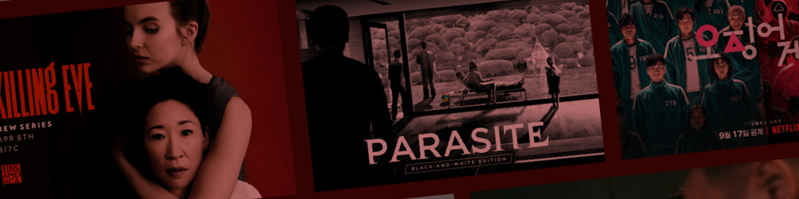

2025 年 Netflix 上最值得觀看的 18 部驚悚片
2025年，Netflix的驚悚片庫將繼續擴充，從經典犯罪、心理懸疑到激烈的動作片，幾乎涵蓋了該類型的所有分支。然而，面對成千上萬的影片，觀眾常常難以抉擇。
因此，我們專注於觀眾最看重的內容，並根據評論界的好評、重要獎項和 IMDb 評分，精心挑選了 18 部 Netflix 評分最高的驚悚劇集。劇集陣容包括榮獲艾美獎的新劇集、榮獲奧斯卡獎的經典作品以及傑出的 Netflix 原創作品，均獲得了強勁的收視率和重要獎項的支持。
如果你正在尋找驚心動魄、腎上腺素飙升的驚悚片，請查看我們精心挑選的 2025 年最值得觀看的 18 部驚悚片名單。
1. 青少年期（2025年）
该劇集是首部榮登英國 BARB 週榜的流媒體平台劇集，前兩集分別吸引了 645 萬和 594 萬觀眾。该劇集榮獲 13 項艾美獎提名，是 2025 年最受關注的迷你劇之一。
故事發生在英國的一個小鎮，13歲的杰米·米勒被指控殺害了同學凯蒂。真相究竟如何？劇集穿梭於法庭、家庭和學校之間：母親在愛與懷疑之間徘徊，偵探在事實與輿論之間左右為難……隨著案件的展開，所有人都被推向道德與真相的邊緣。
這部剧採用一鏡到底的拍攝方式，營造出一種持續的緊張感和沉浸感。這不僅是對一樁謀殺案真相的追尋，更是對觀眾的一次現實拷問：社會究竟是如何塑造甚至摧毀下一代的？看完之後，這種沈重感久久縈繞在我的心頭。
2.雷普利（2024）
這部
故事背景設定在1961年的纽约，騙子汤姆·雷普利在意大利接受了一份工作，卻最終捲入了謊言、操縱和谋杀的漩渦。震撼的視覺效果營造出流暢的緊張感，斯科特的表演極具魅力——時而迷人，時而令人毛骨悚然。

3.小馴鹿（2024）
理查德·加德將自己
故事講述了喜劇演員唐尼·邓恩的善舉，意外地招致一位孤獨女子多年的跟蹤和控制。隨著他的生活逐漸被入侵，歡笑和舞台逐漸被恐懼和窒息所取代，讓我們感受到心理控制的真正恐怖。

4. 黑暗（2017-2020）
《暗黑》是一部德國
該劇以其鮮明的視覺風格、錯綜複雜的敘事和壓抑的氛圍，將觀眾困在時間的迷宫中。其宏大的結構和深刻的哲學思想廣受赞誉，榮獲多項大獎，並在2021年BBC评选的21世纪最伟大電視劇榜单中位列第58位。

5.鬼入侵（2018）
該劇由迈克·弗拉纳根執導，改編自雪莉·杰克逊的同名
該劇通過兩條相互交織的時間線展開：它展示了希尔大宅五個成年兄弟姐妹的超自然經歷如何仍然困擾着他們，而倒敘則揭示了 1992 年晚上迫使這家人逃離豪宅的事件。
憑藉着複雜而緊湊的敘事，該劇不僅贏得了觀眾的熱烈好評，更是在業界屢獲殊榮，憑藉《弯颈女士》榮獲布拉姆·斯托克獎"最佳剧本獎"。

6.星期三 第二季（2025）
《星期三》第一季至今仍是Netflix英語收视榜上的傳奇。今年上映的第二季讓這部哥特式校园驚悚剧更加黑暗。劇情節奏更快，謎團更深，而
《星期三》第三季现已確認開拍。主創人員承諾將深入挖掘星期三的心理世界，展現更多亚当斯家族的混亂，以及全新的超自然反轉。我已經開始數日子了——如果你已經連續追了前兩季，你就知道等待的感覺是無盡的。

7.杀死伊芙（2018-2022）
這部女性主导的間諜驚悚剧自開播以來就廣受歡迎，屢獲殊榮。吴珊卓憑藉該劇成為首位獲得
故事圍繞军情五处特工
作為一名觀眾，我常常在觀看時感受到一種既緊張又令人著迷的吸引力。薇拉内尔的危險魅力和伊芙的堅定決心讓我欲罷不能，總是迫不及待地想看下一集。這種曖昧卻又致命的緊張感甚至比傳統驚悚片更引人入勝。
8.纸钞屋（2017-2021）
這部由亚历克斯·皮纳執導的西班牙驚悚剧講述了一群以"教授"為首的城市劫匪劫掠皇家鑄幣廠和西班牙銀行的故事。該劇情節錯綜複雜，節奏緊湊，情感糾葛，俘獲了全球觀眾的心。
該劇在 Netflix 上映後迅速引起轟動，榮獲國際艾美獎最佳劇情类劇集獎，其

9.難以置信（2019）
這部犯罪迷你劇給我留下了深刻的印象。它改編自
该劇集一經推出便廣受好評，榮獲皮博迪獎，並斬獲
對我來說，它不是一部簡單的懸疑驚悚片，而是一部直擊心靈的影片，看完之後，那種感覺揮之不去，難以忘懷。

10.心靈猎人（2017）
與典型的犯罪剧不同，《心靈猎人》通過安靜的心理對抗而非血腥場面來營造緊張氣氛。它探討了我們是否必須了解邪惡才能與之抗爭，並逐漸揭示了犯罪和人性的陰暗面。

11. 怪物：艾德·盖恩的故事（2025）
瑞恩·墨菲和伊恩·布伦南廣受好評的怪物選集
墨菲的精准之處處处可見——復古完美的制作設計、令人窒息的氛圍，以及令人目不轉睛、緩慢而又充滿恐懼的節奏。影片既是一部犯罪剧，又是一部心理研究作品，迫使觀眾直面一個令人不安的問題：艾德·盖恩究竟是天生邪惡，還是天生如此？

12. 寄生虫（ 2019 ）
奉俊昊執導的這部韓國驚悚片榮獲戛納電影節金棕櫚獎，並成為
故事講述了貧困的金氏家族如何通過陰謀詭計進入富裕的朴氏家族。当他們的陰謀被揭穿後，深藏的慾望和階級矛盾爆發，最終引發混亂。這部電影既是一部緊張刺激的驚悚片，也是
奉俊昊將喜劇、懸疑和諷刺交織在一個故事中，故事從爆笑到令人窒息的緊張感。在Netflix Premium上觀看《寄生虫》時，我被其中幽默如何轉化為不安所震撼，也由此明白了這部電影為何能獲得奥斯卡獎。

13.《怪奇物語》第五季（2025）
Netflix 最受期待的大結局將於 2025 年底到來。這部科幻驚悚片自 2016 年以來就已成為一種文化現象，第五季承諾以超過 4 億美元的預算呈現與维克那的終極對決——可與《權力的遊戲》的最後一季相媲美。
故事背景設定在1987年秋天，霍金斯因"颠倒世界"的裂痕而四分五裂。核心成員重聚，展開
作為一個從一開始就追這部剧的人，與這些角色告別的情感重擔令人難以承受。杜弗兄弟打造了一部罕見的作品：一部

14. 呼叫（2020）
由李忠賢執導，全鍾瑞、朴信惠主演的《The Call》榮獲第 57 届百想藝術大賞最佳導演獎和最佳女演員獎（全鍾瑞）。
一通电话跨越了2019年和1999年，將兩個女人的命運聯繫在一起。最初的偶然，最終演變成了一場致命的衝突：一個是冷酷無情的連環殺手，另一個是為生存而戰的年轻女子。隨著時間線的扭曲，真相和未來都變得岌岌可危。

15. 鱿鱼遊戲（2021-2025）
這部由黃東赫執導的韓國生存驚悚片一經上映便引發全球關注。在
故事講述了456位負債累累的普通人，他們被迫參加殘酷的生存競賽，這些競賽的玩法類似於我們小時候玩過的"紅燈綠燈"和拔河等遊戲。
三季
作為一名觀眾，我幾乎屏住呼吸，全程都在追剧。每一層都讓我既興奮又害怕，人物之間的選擇和背叛更是令人揪心。

16. 平台（2019）
這部電影在 2019 年多伦多國際電影節首映，並獲得了午夜狂熱觀眾選擇獎，隨後在 Netflix 上映後迅速竄紅。
故事發生在一座垂直的監獄——"平台"。上層人大快朵頤，下層人則為殘羹剩飯爭鬥不休，甚至有人因飢餓而發瘋。隨著階級的更迭和道德的淪喪，影片揭露了階級、资源分配和不平等的殘酷真相。

17. 叛军岭（2024）
故事講述的是前美國海軍陸戰隊員特里（亞倫·皮埃爾飾演）在一個小鎮捲入腐敗與政治暴力的衝突。起初只是一次例行的交通攔截，但很快升級為一場生存之戰，迫使他在屈服於權力和求生本能之間做出選擇。

18.惊天营救2（2023）
這部 Netflix 動作驚悚片由薩姆·哈格雷夫執導，克里斯·海姆斯沃斯主演，延續了 2020 年的《惊天营救》。该片於 2023 年首播，引起了廣泛關注，尤其是
故事講述了退役僱傭兵泰勒·雷克在完成一次致命任務後，再次踏上高風險的救援之旅。這一次，他必須闖入格魯吉亞的一所監獄，拯救前妻的家人，卻在與自身過去的創傷作鬥爭的同時，陷入了與幫派和軍閥的殘酷衝突。

💡 2025 年 Netflix 驚悚片观影技巧
如果你和我一樣喜歡這類高分驚悚片，那麼一個穩定且價格實惠的 Netflix 訂閱方式就至關重要。环球巴士在這方面非常實用，它提供Netflix Premium共享賬戶服務，季度費用僅為 90 元左右，比官方訂閱便宜 60% 以上。
體驗與Netflix官方版一致，可在手機、電腦或電視上無縫觀看。有了环球巴士，我可以輕鬆追看自己想看的電影和電視劇，尤其是那些廣受好評的驚悚片。省下的錢可以直接用來買零食，讓電影時光更加充實。
结论
憑藉《怪奇物語 5》、《怪物：艾德·盖恩》和《星期三》等新剧，Netflix 不斷證明它仍然知道如何讓你心跳加速。
這些驚悚片每部都有其吸引人的地方：道德謎題、觸動人心的震撼，或是令人難以忘懷的角色。正因如此，Netflix 仍然是所有追求懸疑題材的觀眾的首選平台。
如果你需要從緊張的情緒中解脫出來，你可以按照我們的指南探索 Netflix 的更多方面，了解Netflix 上的最佳經典電影和最佳喜劇。
所以，下次你再想找點真正能讓你活力四射的東西時，就從這些精選開始吧。如果你想要不花錢就能享受完整的高級體驗，奈飞小铺的 Netflix 賬戶能讓你輕鬆沉浸其中，享受每一個緊張刺激的深夜時光。
常問問題
怪奇物語第五季什麼時候播出？
《怪奇物語5》將於2025年秋季上映。前4集將於
Netflix 上有什麼好看的心理驚悚片嗎？
是的，《暗黑》（IMDb 8.7）和《雷普利》（2024）是首選，將懸念與深度心理學和屢獲殊榮的故事情節融為一體。
哪部是排名第一的懸疑電影？
《寄生虫》（2019）榮獲包括最佳影片在內的四項奥斯卡獎，是 Netflix 最受好評的懸疑片。
有什麼新的好看的驚悚片？
榮獲艾美獎提名的《青春期》（2025 年）和榮獲皮博迪獎的《雷普利》（2024 年）是 Netflix 的傑出新驚悚片。